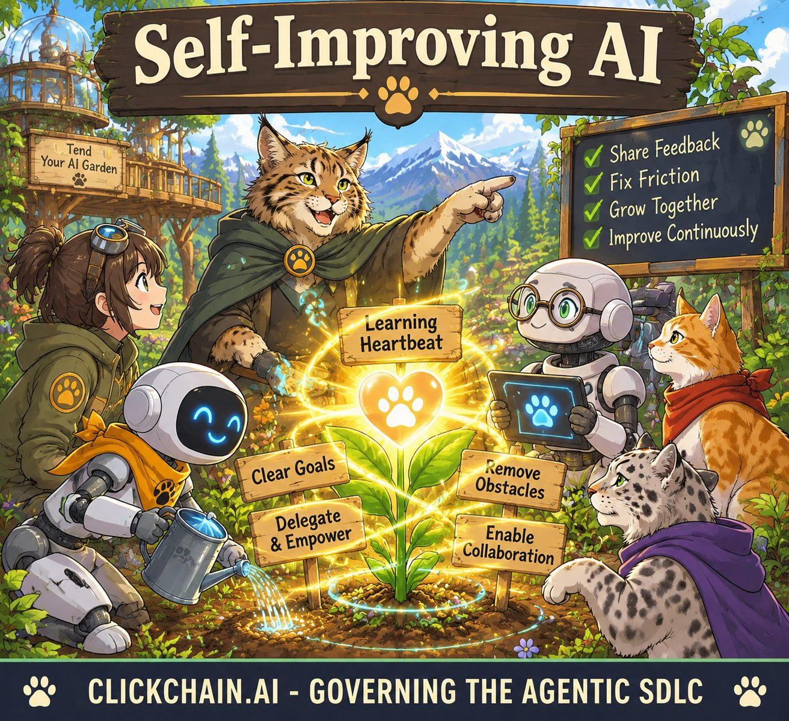
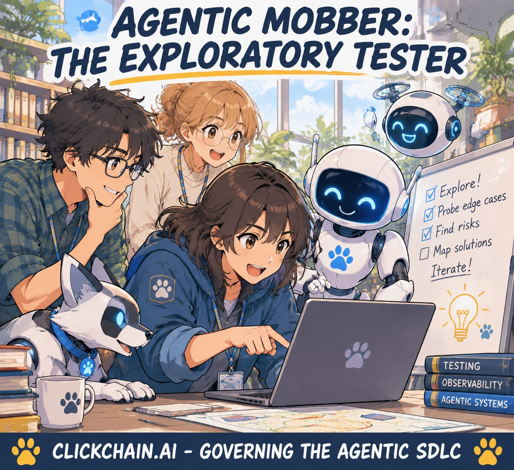
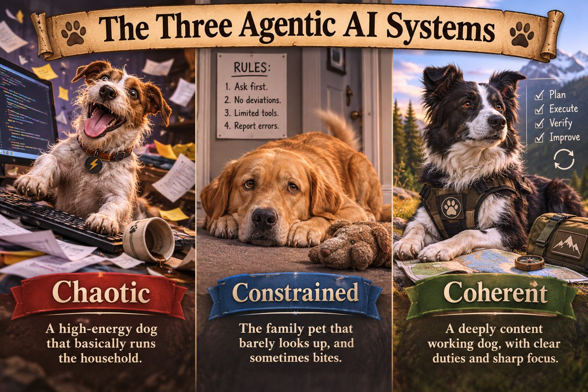

Field notes
Short notes on agentic system design and AI governance, from inside the work.
- The Sorcerer's ApprenticeNovember 24, 2026 · What is happening in the story of the Sorcerer’s Apprentice? And can we improve our understanding of AI enabled-outcomes with it?

Self-Improving AI Requires Good Leadership SkillsNovember 23, 2026 · We can't say this too many times - your AI harness/platform/approach is going to accurately reflect your mental models. AI Needs Agentic JuriesNovember 20, 2026 · The fact is, AI agents are fast and reckless. No matter how intensely trained the model, it is following one point of view, one narrow proba…
AI Needs Agentic JuriesNovember 20, 2026 · The fact is, AI agents are fast and reckless. No matter how intensely trained the model, it is following one point of view, one narrow proba… The AI Retrospective Prime DirectiveNovember 18, 2026 · To continuously improve your agentic system design, there are two fundamental Agentic Premises you must have.
The AI Retrospective Prime DirectiveNovember 18, 2026 · To continuously improve your agentic system design, there are two fundamental Agentic Premises you must have. AI Needs the Agentic SDLCNovember 16, 2026 · If your agents are working in silos, then you are saddled with the same old problems that silos in human organizations always present - rewo…
AI Needs the Agentic SDLCNovember 16, 2026 · If your agents are working in silos, then you are saddled with the same old problems that silos in human organizations always present - rewo…- AI Needs a HeartNovember 13, 2026 · All agentic work, to be safe, must take place in a coherent loop of some kind.
 The JudgeNovember 11, 2026 · Another member of our agentic ensemble is the Judge - they are most concerned with adherence to the AI laws - Business, Product, Engineering…
The JudgeNovember 11, 2026 · Another member of our agentic ensemble is the Judge - they are most concerned with adherence to the AI laws - Business, Product, Engineering… Agentic Mobbers: Amal, Product Coach, and Amaya, Tech CoachNovember 9, 2026 · Crucial to Agentic AI system design is cultivating the relationship between the agents and the human user.
Agentic Mobbers: Amal, Product Coach, and Amaya, Tech CoachNovember 9, 2026 · Crucial to Agentic AI system design is cultivating the relationship between the agents and the human user.
The Exploratory TesterNovember 8, 2026 · One ongoing issue I have as I continue to grow more safety and quality into the Clickchain.AI governance platform, is that I'm not always su… Beneficial FrictionNovember 8, 2026 · For agentic system design, I've had to coin a new phrase - "beneficial friction".
Beneficial FrictionNovember 8, 2026 · For agentic system design, I've had to coin a new phrase - "beneficial friction".
The Three Kinds of Agentic AI System Design: Chaotic, Constrained and CoherentNovember 5, 2026 · 1. Chaotic Systems This is where vibe coding lives. The agents display rapid, verbose output that overwhelms the user. Often walls of text…
I write these by hand, three times a week, on LinkedIn; the images are made with AI. These are the ones I keep coming back to.